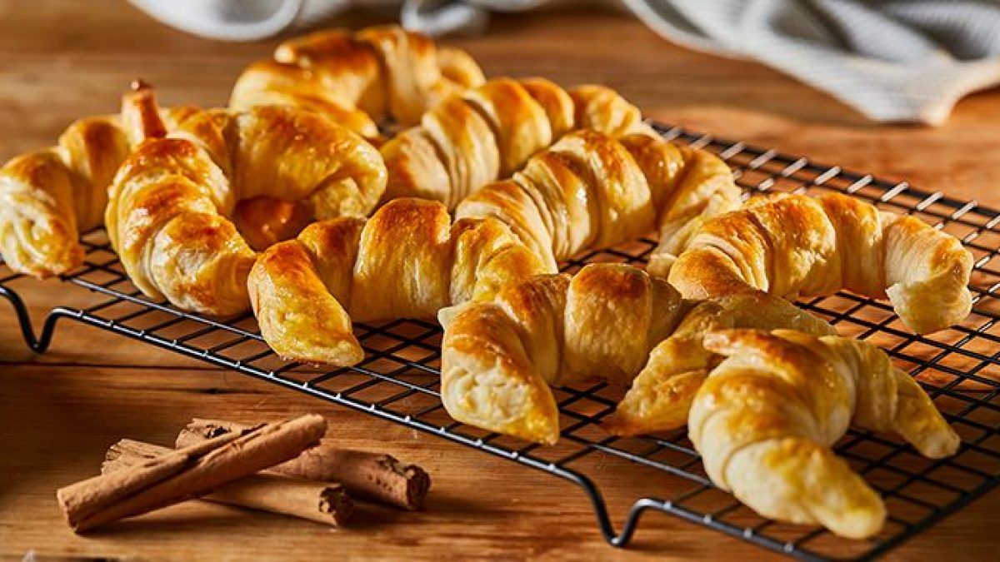

Ingredientes:
- 1K de Harina
- 50GR de Levadura
- 200GR de Manteca o Margarina
- 200GR de Azúcar
- 1 Huevo
- Escencia de Vainilla
- 200ML de Leche
- Almíbar
- 1 Huevo (para pincelar)
¿Cómo prepararlo?
- Desgranar el cubo de levadura junto con agua y una cucharada de azúcar y harina.
- Mezclar la manteca (pomada) y el azúcar hasta obtener una mezcla cremosa.
- Agregar el huevo, una pizca de sal y una cucharada de esencia de vainilla.
- Luego de integrar, volcar la leche junto con el resultado de la fermentación de levadura y batir un poco.
- Después, agregar de a poco la harina, hasta tener una masa homogénea y suave. Dejar leudar 45 min.
- Estirar la masa y formar triángulos para hacer la forma de las medialunas.
- Dejar leudar unos 30 minutos más.
- Cuando ya se hayan leudado, poner a calentar el horno a 160°, y pincelear con huevo. Llevar al horno, durante 40-50 minutos.
- Preparar el almíbar.
- Retirar las medialunas cuando tengan el dorado que más les guste.
- ¡A comer!
